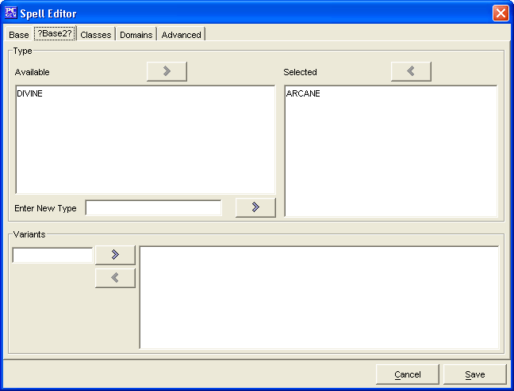

Spell Editor: Base Spell Tab Continued

The
?Base2? Tab
is used to add what "types" are
associated with the spell. The user can create new types.
The two
Type
windows,
Available
and
Selected
are used
to create a list of types which the Spell belongs to.
-
The
Add
and
Remove
buttons
will move the highlighted type between the 2 windows, as will
double clicking on a type name.
-
New Types can be added by typing the name and clicking on the
add button.
-
The
Variants
are for when an item (wand,
scroll, etc.) and you need to choose an effect at time of item
creation (eg. Endure Elements).
The
Cancel
and
Save
buttons,
which appear on every tab, are used to either cancel the Spell
creation or save it to the customSpells.lst file.